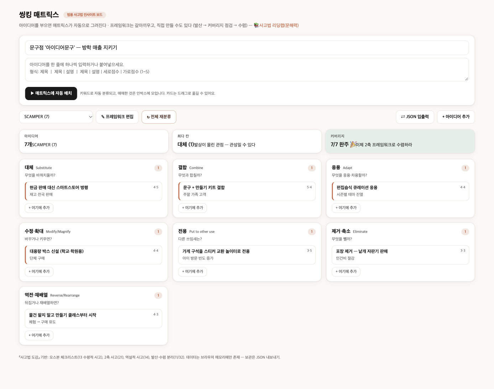

가상 사례 · 🛍️ 소매·생활
✏️ ‘아이디어문구’ 문구점
목표: 방학 매출 지키기 — SCAMPER 7가지 질문으로 아이디어 7개를 정리했습니다.
핵심 3가지
C 결합 문구 + 만들기 키트 → 주말 가족 고객
P 전용 가게 구석 → 스티커 교환 놀이터 → 아이 방문 횟수 ↑
S 대체 스마트스토어 병행 → 동네 밖 손님
완성 보드

렌즈별 아이디어
효과·실현성은 1~5점의 예시 점수입니다. ⭐는 둘 다 4점 이상 — “우선 실행” 후보.
대체Substitute1
무엇을 바꿔치울까?
-
현금 판매 대신 스마트스토어 병행재고 전국 판매⭐ 효과 4 · 실현 5
결합Combine1
무엇과 합칠까?
-
문구 + 만들기 키트 결합주말 가족 고객⭐ 효과 5 · 실현 4
응용Adapt1
무엇을 응용·차용할까?
-
편집숍식 큐레이션 응용시즌별 테마 진열⭐ 효과 4 · 실현 4
수정·확대Modify/Magnify1
바꾸거나 키우면?
-
대용량 박스 신설 (학교·학원용)단체 구매⭐ 효과 4 · 실현 4
전용Put to other use1
다른 쓰임새는?
-
가게 구석을 스티커 교환 놀이터로 전용아이 방문 빈도 증가효과 3 · 실현 5
제거·축소Eliminate1
무엇을 뺄까?
-
포장 제거 — 낱개 자판기 판매인건비 절감효과 3 · 실현 3
역전·재배열Reverse/Rearrange1
뒤집거나 재배열하면?
-
물건 팔지 말고 만들기 클래스부터 시작체험 → 구매 유도효과 4 · 실현 3
먼저 시작하기 좋은 것 (4개)
- 대체 현금 판매 대신 스마트스토어 병행 — 재고 전국 판매
- 결합 문구 + 만들기 키트 결합 — 주말 가족 고객
- 응용 편집숍식 큐레이션 응용 — 시즌별 테마 진열
- 수정·확대 대용량 박스 신설 (학교·학원용) — 단체 구매
내 가게로 바꿔서 해보기
- 씽킹 매트릭스를 엽니다.
- ⇄ JSON 입출력 → 아래 JSON을 붙여넣고 불러오기.
- 가게 이름·아이디어를 내 것으로 바꾸고, 빈 칸을 채웁니다.